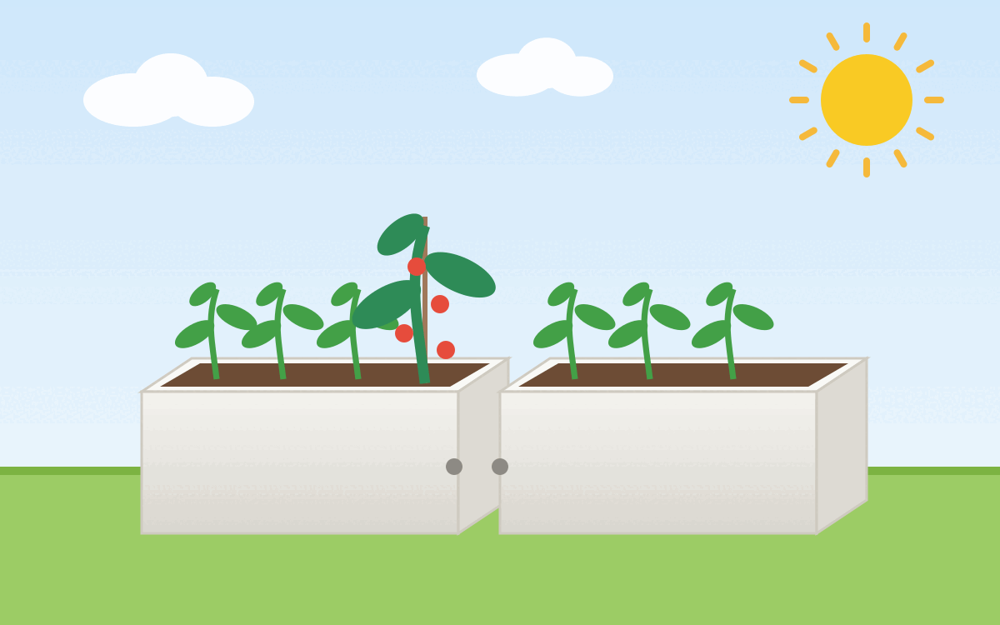

Wir wollen einen weißen Sichtbeton bekommen.
{kind=link}

Materialien
- Betonmischung
- Zementfarbe
- Steinversiegelung (Schutz gegen Feuchtigkeit)
Für die Schalungsform:
- Holzbretter
- Schrauben
Werkzeuge:
- Großer Eimer zum Mixen vom Beton
- Beton-Mischer
- Kittkugel zum Fugenabziehen
Anleitung
- Schalungsform herstellen
- Beton mischen + gießen
- Mehrere Tage warten
- Ausschalen
- Kanten schleifen
- Oberflächen einlassen.
Schalungsform
Die folgende Form erlaubt es, dass man verschiedene Beton-Teile kombiniert:
--------------------------------------
| |
| |
--- ---|
| |
| |
|-------------------------------------|
Wenn man durch das Endstück jeweils ein Plastikrohr gibt, sodass es beim Ausgießen frei bleibt, dann kann man die Teile gut mit Metallstangen im Boden verankern.
- Holz: Beschichtete Spanplatte - keine Perloberfläche, es muss komplett glatt sein.
- Kanten mit Silikonfugen abdichten
- Schalungsform mit Trennmittel einreiben, sodass der Beton keine Verbindung mit der Schalungsform eingeht.
Beton herstellen
Zuschläge:
- Weißzement von Dyckerhoff: 10€ für 25kg
- Quarzsand (0,063mm - 0,3mm Korngröße für die Beton-Matrix): 25kg
- Spielsand (weißen / hellen Sand): 25kg
- Ultraweiße Pigmente
- Fließmittel
- Glasfasern
Mischung:
- 1 Teil Zement, 1 Teil Quarzsand, 0,6 Teile Spielsand, ein bisschen Glasfasern
- Wasser: ca. 40% vom Zement-Anteil. Also bei 1kg Zement gibt es 400g Wasser
Beton gießen
- Beton nur an einer Stelle in die Schalungsform gießen - damit soll die Hälfte der Höhe abgedeckt werden.
- Mit Händen (mit Handschuhen) den Beton in die richtige Richtung drücken
- Mit Gummihammer am Rand der Schalungsform / auf den Tisch der Schalungsform schlagen, um durch Vibrationen die Luftblasen entweichen zu lassen.
- Armierungsgewebe (z.B. aus Kunststoff) in die Mitte einarbeiten
- Restliche Höhe der Schalungsform gießen
- Oberfläche mit Kunststofffolie (lose) abdecken. Das verhindert Verdunstung und sorgt für einen stabileren Beton
Ausschalen
- Mindestens 2 Tage warten
- Die Oberfläche muss sich trocken anfühlen
- Beton schleifen und polieren
Versiegeln
- Öl vs. Hydrophobierung (Imprägnierung) vs. Beschichtung vs. Bekieselung
- Öl ist nicht für den Außenbereich geeignet, weil es nicht wetterbeständig ist
- Hydrophobierung (Imprägnierung) kann z.B. mit Wachs kombiniert werden. Das erlaubt eine Hochglanz-Politur
- Epoxidharz bietet den stärksten Schutz, ist aber nicht diffusionsoffen und nicht UV-beständig (vergilbt) und daher nur bedingt für den Außenbereich geeignet
Infos
- Grey Element: Modulares Hochbeet aus Leichtbeton selber bauen
- Grey Element: Weißen Beton einfach und günstig selber machen
- Grey Element: Tutorial: Eine Tischplatte aus Beton herstellen // Meine Tipps für ein perfektes Sichtbetonergebnis
- Grey Element: Beton richtig versiegeln